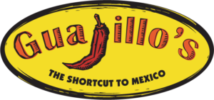

<!DOCTYPE html>
<html lang="en">
<head>
    <meta charset="UTF-8">
    <title>Mapbox</title>

    <script src='https://api.tiles.mapbox.com/mapbox-gl-js/v0.53.0/mapbox-gl.js'></script>
    <link href='https://api.tiles.mapbox.com/mapbox-gl-js/v0.53.0/mapbox-gl.css' rel='stylesheet' />
    <style>
        #map {
            width: 100%;
            height: 400px;
        }
    </style>
</head>
<body>

<div id='map'></div>
<script src="../js/mapbox-geocoder-utils.js"></script>
<script src="../js/keys.js"></script>
<script>
    mapboxgl.accessToken = mapboxglAccessToken;
    var map = new mapboxgl.Map({
        container: 'map',
        style: 'mapbox://styles/mapbox/streets-v9',
        zoom: 10,
        center: [-98.4916, 29.4252]
    });
    // var yayasThai= {
  //     address: "5305 McCullough Ave, San Antonio, TX 78212",
  //     popupHTML: "<p>Check out the panang curry!</p>"
  // };

    var favEats = [
        {name: "Yaya's Thai", address:"5305 McCullough Ave, San Antonio, TX 78212", popupHTML:"<p>Check out the panang curry!</p>"},
        {name: "Moshe's", address: "3910 McCullough Ave, San Antonio, TX 78212", popupHTML:"<p>Hummus, Babaganoush, Tabouleh, Oh My!</p>"},
        {name: "Guajillo's", address: "1001 Northwest Loop 410, San Antonio, TX 78213", popupHTML: "<p>Birria anyone? And definitely try a ronchata sometime...</p>"}
    ]


    // popupHTML: "


        function placeMarkerAndPopup(info, token, map) {
      geocode(info.address, token).then(function(coordinates){
          var popup = new mapboxgl.Popup()
              .setHTML(info.popupHTML);
          var marker = new mapboxgl.Marker()
              .setLngLat(coordinates)
              .addTo(map)
              .setPopup(popup);
          // popup.addTo(map);//if this is turned on, all the popups will show when loading
      });
    }

    favEats.forEach(function(element, index, array){
       placeMarkerAndPopup(element, mapboxglAccessToken, map);
    });


  //   placeMarkerAndPopup(favEats[0], mapboxglAccessToken, map);
  //   placeMarkerAndPopup(favEats[1], mapboxglAccessToken, map);
  //   placeMarkerAndPopup(favEats[2], mapboxglAccessToken, map);


</script>
</body>
</html>